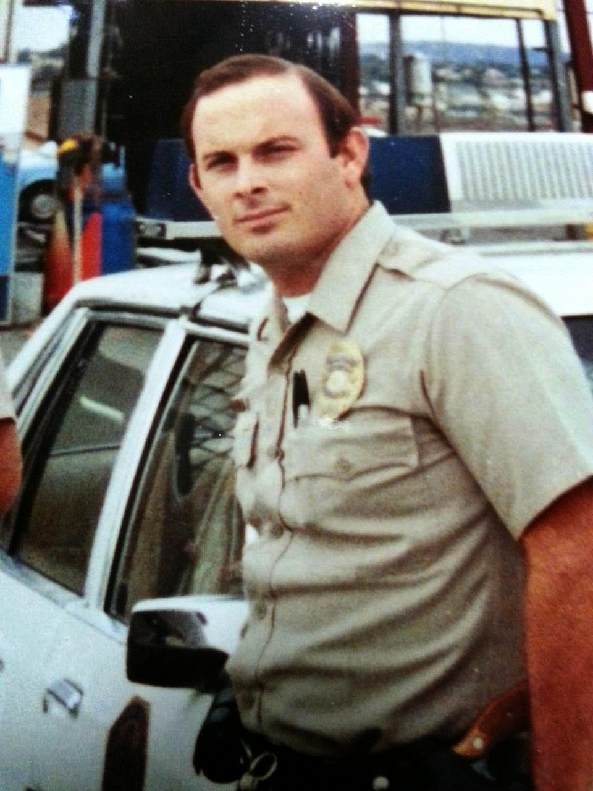

The encounter began as a routine traffic stop. It ended with
the avoidable shooting death of a young man that the killer described as an act
of self-defense.
After the jury acquitted the defendant of murder, the
prosecutor indicted the shooter a second time on several lesser charges. The
second jury acquitted the defendant on the most serious charges and deadlocked
regarding multiple counts of assault with a deadly weapon. The prosecutor, grudgingly
admitting that the defendant had been exonerated in a “fair trial,” dismissed
the remaining charges.
San
Diego resident Sagon Penn was 22 years old when he was detained and
assaulted by Officers Donovan Jacobs and Thomas Riggs in March 1985. At the
time, he was about two weeks away from starting a job as a “community service
officer” with the police department. He had also filled out an application to attend
the police academy.

Physically and temperamentally, Penn was over-qualified for
a job with the SDPD. Although he hadn’t played high school sports, he was tall
and athletic, and had
earned a brown belt in Karate. According to his friends and family, he was a natural
peacemaker, a student of Buddhism who later converted to Christianity and
who learned martial arts as a way to protect himself and those around him
without using lethal force.
Jacobs, by way of contrast, was superbly qualified to be a law
enforcer, and patently unqualified to be a peace officer. He was described as “one
of the most prejudiced white people I’ve ever known” and “an ideal candidate
for the Ku Klux Klan” by former police colleague Drew MacIntrye, who became a minister in nearby Alpine after
leaving the San Diego PD in disgust.
Fellow SDPD Officer Nathaniel Jordan, a black man who also
left law enforcement for the ministry, confirmed
that assessment, testifying that Jacobs made casual and frequent use of
epithets in his presence, such as “n*gger” and “boy.” During Penn’s second
trial, former SDPD Lieutenant Doyle Wheeler described his attempts to warn
superiors that Jacobs’ bigotry and aggression had provoked confrontations
endangering the lives of his comrades.
Jacobs was made a Police Agent (the department’s designation
for a patrol officer) despite an academy assessment documenting his tendency to
“use profanity, slurs, and lies in his police work,” in the words of a Los Angeles Times summary of trial
evidence.
“Unless you show some considerable change or at least some
more consideration for others and can change your behavior … we don’t want you
because you are going to do nothing but create problems for yourself, for the
public, and for the department,” Jacobs
was reportedly told by an academy supervisor in 1979.
At the time of his confrontation with Penn, Jacobs was a
known danger to his colleagues and the public at large. Penn, despite
“rumors” that the prosecution lusted to introduce as evidence in the
subsequent trial, had no criminal record, no gang affiliations, and no
demonstrated inclination toward violence.
Among the tenets instilled in Penn by his
Karate instructor, Orned Gabriel, was the need to de-escalate conflicts
before they blossom into violence. Self-defense, Penn was taught, begins with
walking away from a potential fight.
Officer Jacobs, who had stopped Penn without cause simply
because he was a young black man in the company of several black friends, was
determined to start a fight. Penn, on the other hand, was determined to avoid
one.
Penn wasn’t stopped for a traffic violation. The official
pretext supplied in the subsequent report was that he had made an illegal U-turn, but that
pretense dissolved very quickly during the first trial. He was seated behind the wheel of a pickup
truck in a driveway talking with friends when he was accosted by Jacobs.

“Are you Blood or Cuz?” Jacobs
sneered at Penn, assuming that the puzzled young black man simply had to be
a member of a street gang. “Are you Blood or Cuz?”
Although Jacobs had neither probable cause nor reasonable
suspicion to do so, he demanded identification from Penn. Out of an abundance of caution
and a desire to be fully cooperative, Penn handed the officer his billfold,
inviting him to inspect its contents. His intent, Penn later explained, was to
demonstrate that “there were no drugs or anything in there."
Jacobs – who by this time was being backed up by Officer
Thomas Riggs, who arrived in a separate cruiser with
a police groupie named Sarah
Pina-Ruiz -- reciprocated his cooperation by shoving the wallet back in
Penn’s face and ordering him to withdraw the license. Recognizing that Jacobs
was trying to start a fight, rather than conduct a legitimate investigation,
Penn behaved in accordance with his martial arts training: He put up his hands
in a gesture of withdrawal, and walked away.
At that point, Penn had done everything the law had required.
He was not legally obliged to answer any questions, or endure any abuse. He had
been compliant and respectful in the face of provocation, and rather than
responding with violence when baited by Jacobs he stood down.
These actions, San Diego Deputy DA Michael Carpenter would later pretend, displayed “an insurmountable attitude problem toward authority.” The unarmed Penn, whom Carpenter described in court as “Mr. Arrogance,” supposedly threatened Officers Jacobs and Riggs by asserting his legal right to end a conversation with a truculent, abusive cop. His behavior was “insolent, brazen, and immature” in dealing with a police officer who supposedly had the authority to berate him in any language he chose, and detain him on a whim.
These actions, San Diego Deputy DA Michael Carpenter would later pretend, displayed “an insurmountable attitude problem toward authority.” The unarmed Penn, whom Carpenter described in court as “Mr. Arrogance,” supposedly threatened Officers Jacobs and Riggs by asserting his legal right to end a conversation with a truculent, abusive cop. His behavior was “insolent, brazen, and immature” in dealing with a police officer who supposedly had the authority to berate him in any language he chose, and detain him on a whim.
Carpenter disgorged that lengthy string of adjectives in
order to avoid the one he almost certainly wanted to use, but was canny enough
to avoid: “Uppity.” He also urged the jury to accept the sophistical claim that
because Penn had been trained in self-defense, he couldn’t invoke the right to
self-defense in justification of his actions – presumably because anything
other than abject helplessness on the part of a victim of criminal aggression
by police constitutes a felony.
After Penn turned to leave, Jacobs attacked him from behind,
throwing him to the ground and assaulting him with both punches and kicks.
“He beat me down, over and over,” Penn
recalled years later. “He beat me down. He beat me down.”
Unprepared for the skill with which the trained and
physically skilled victim repelled the unprovoked attack, the costumed bully
withdrew his baton, and – according to several witnesses – screamed
that he was going to “beat your black ass.” Rather than intervene on behalf
of the victim, Riggs joined in the criminal assault.
 |
| Officer Thomas Riggs. |

“I could hear ‘em just grunting with anger and just
breathing real hard and just trying to take my head off,” Penn later recounted
to investigators. At the time, Jacobs was “sitting on top of me … punching [me]
in the face … He was reaching for his gun, he was reaching like right there for
his gun .... And I reached, and I grabbed it before he did.”
“The power of the state was ganging up on him,” summarized
defense attorney Milton Silverman during Penn’s second trial. Multiple witnesses
described how after he gained control of Jacobs’ gun, the victim hesitated and
briefly pleaded for the assailants to stop before firing several shots within
the space of six seconds. Riggs was fatally wounded. Sarah Pina-Ruiz, who was sitting
in a police vehicle, suffered a gunshot wound that left her paralyzed.
Jacobs, who had instigated the entire affair, was
shot in his right arm and then run over by Penn, who commandeered a police
vehicle and fled – not from the
police, but to the police. Acting
entirely out of character for someone who supposedly had “an insurmountable
attitude problem toward authority,” Penn drove to the nearest police station to
report the incident.
“The police were nice to me at first,” Penn told a reporter
following his second trial. “But that didn’t last.”
Unlike Darren Wilson, who also shot and killed someone in
what he describes as an act of self-defense, Penn suffered visible injuries
from being struck and kicked by two armed police officers – including blows to
the head with a baton, which is an act of attempted homicide. Years after the
beating, Penn still
displayed wounds in his skull from the baton strikes.
Unlike Darren Wilson, after the fatal shooting Penn
was not allowed to clean his hands and change his clothing, thereby destroying
physical evidence.
Unlike Darren Wilson, who
never filled out an incident report or gave a formal statement to investigators,
Penn – acting in the ingenuous hope that his self-defense claim would be
respected -- spoke at length and in detail about what had happened. Since Penn
was not protected by the “Garrity”
privilege that Wilson invoked, or the
spurious doctrine of “qualified immunity,” every self-incriminating
statement he made was used as evidence against him.
Unlike Darren Wilson, Sagon Penn was not given the luxury of
a grand jury inquest in which a congenial prosecutor presented exculpatory
evidence and examined
the background of the victims at length and in detail. Penn spent years in
jail prior to his trial, and then endured two lengthy and expensive trials
before he was free to resume a life that had been irreparably damaged as a
result of a few minutes of senseless, state-inflicted violence.
Perhaps the most striking divergence between Wilson and Penn
is offered by their respective answers when asked how they would remember the
shootings, and if they would respond the same way in similar circumstances.
Is the killing of Michael Brown “something you think that
will always haunt you?” Wilson
was asked by George
Stephanopoulos, who clearly expected a perfunctory expression of regret.
“I don’t think it’s a haunting,” Wilson replied, his voice
flat as the Kansas prairie and his blank demeanor displaying no evidence of a
burdened conscience. “It’s always going to be something that happened.”
Penn’s
response to similar questions revealed that he was tormented to the depths
of his soul by the knowledge that he had taken the life of another human being,
and left two others permanently disabled.
“I should of just [gone] ahead and let ‘em just blow my head
off,” a
tearful Penn told investigators following his acquittal. “Lord, is that
what you want?... You know, that’s a tough faith, but at the same time it’s
like saying, `Well, Lord, if that’s your will, then I’ll just close my eyes and
just pray…. That’s what I would do right now. If it ever happened again like
that, I would just close my eyes and I would just pray…. I’ll just accept that
pain, I’ll just accept that bullet to my head.”
Penn was haunted – a condition with which Wilson professes
to be unacquainted – by the fact that Officer Riggs had a family.
After Riggs died, Penn recalled, “I would cry, I couldn’t
live, I hated holidays. I’ll always be worrying and praying and thinking about
his two children and crying.”
After Penn’s acquittal in the first trial, Judge
J. Morgan Lester – who was by no measure inclined
to coddle accused or convicted murderers -- excoriated
the San Diego PD for what he described as a pattern of serious misconduct,
including perjury and withholding evidence. Following Penn’s second acquittal,
the California Attorney General’s office briefly considered pursuing assault
and perjury charges against Jacobs. Those charges were never filed, in large
measure because Penn – who did not want to see his assailant prosecuted -- refused
to cooperate.
In an interview with investigators, Penn described his
belief that God wants to “give Donovan Jacobs a chance to receive [Him]. To
receive Christ into his life, to receive God in his life. That’s why he lived
through that.”
Although he was not a paragon of virtue, either before or
after the fatal encounter with Jacobs and Riggs, Penn followed the
much-discussed and little-observed Christian practice of praying for his
enemies and forgiving the men who had attempted to murder him. Significantly,
Michael Riggs, brother of the late Officer Thomas Riggs, found
it more difficult to forgive Jacobs, who initially sought to deflect blame
by dishonestly claiming that his dead comrade had started the fight.
Free from prosecution because of Penn’s forgiving nature,
Jacobs remained with the San Diego PD for six years before retiring on a
disability pension. He went into legal practice representing other police
officers accused of misconduct or seeking disability benefits. Utterly
impenitent, Jacobs has also published
two books describing his “innovative, proactive tactics” for dealing with
street crime.

Doyle Wheeler, the former SDPD Lieutenant who testified
against Jacobs during Penn’s second trial, barely survived what could have been
one application of those “innovative, proactive tactics.”
Shortly after the trial, Wheeler retired from the force and
relocated to Sun Crest, Washington, a suburb of Spokane. In April 1988, three
or four unidentified men broke into Wheeler’s home, forced him to write a
suicide note at gunpoint, then bound him and shot him behind an ear. Just
seconds before the shooting, phone records and an automatic recording confirmed,
a
call was placed from Wheeler’s home to the desk of Police Agent Donovan Jacobs
in San Diego.
Police authorities in Spokane and San Diego dismissed
Wheeler’s story, claiming that the former officer was psychologically infirm
and had staged the alleged attack – despite the fact that witnesses had seen
strangers enter his home. Police detectives insisted that Wheeler’s voice was
the one in the recorded phone call to Jacobs. No effort was made to follow up
on Wheeler’s suggestion that the recorded phone call be subjected to voice
analysis.
The following year, t-shirts
depicting an ear and the inscription “Doyle Wheeler Hit Team” were sold
during a party held by the police department. The
FBI briefly investigated a claim by a police informant that he had been
offered $1,500 by a San Diego PD sergeant to attack Wheeler, but turned down
the offer because the risk was too great and the payoff too small. A short time
later, the matter was consigned to the cold case file.
Although he physically survived the events of March 31, 1985,
Sagon Penn lost the life he might have enjoyed had he been spared the encounter
with Officers Jacobs and Riggs. Advised by friends and family to leave San
Diego for his own safety, Penn stayed where he was in order to help raise his young
son – who was given his mother’s maiden name out of fear of retaliation. He briefly
attempted to attend college under
an assumed name.
For
fifteen years following his acquittal, Penn’s life was a fitful affair
frequently punctuated by domestic conflicts and hostile encounters with the
police, at least some of which were self-inflicted. In the early 1990s, he
served time in prison for a probation violation after he threw a brick at his
wife’s vehicle.

Penn’s conduct subsequent to his acquittal, contended former San
Diego Police Chief Bill Kolender, supposedly validated the claim that he “was
guilty of [unlawfully] killing a police officer.” It could just as easily have
been a reflection, at least in part, of the physical and psychological trauma
Penn had suffered. Kolender tactfully declined to comment about Jacobs’s
alleged role in the attempted murder of former Lt. Doyle Wheeler, or the
conclusions that could be drawn from the behavior of subordinates who referred
to themselves as the “Doyle Wheeler Hit Team.”
On Independence Day, 2002, Penn committed suicide,
consummating by his own hand the fate Jacobs and many of his comrades had
intended for him.
When informed of Penn’s demise, Bill Farrar, president of
the local police union, reacted with all of the
graciousness we should expect from someone in his position.
“As far as the Police Officers Association is concerned, the
world is better off without him,” grunted Farrar, reflecting the widespread and
demonstrably untrue belief that any Mundane who dares
to disarm an abusive cop has committed a capital offense.
If you can, please donate to help keep Pro Libertate online. Thank you, and God bless!
Dum spiro, pugno!